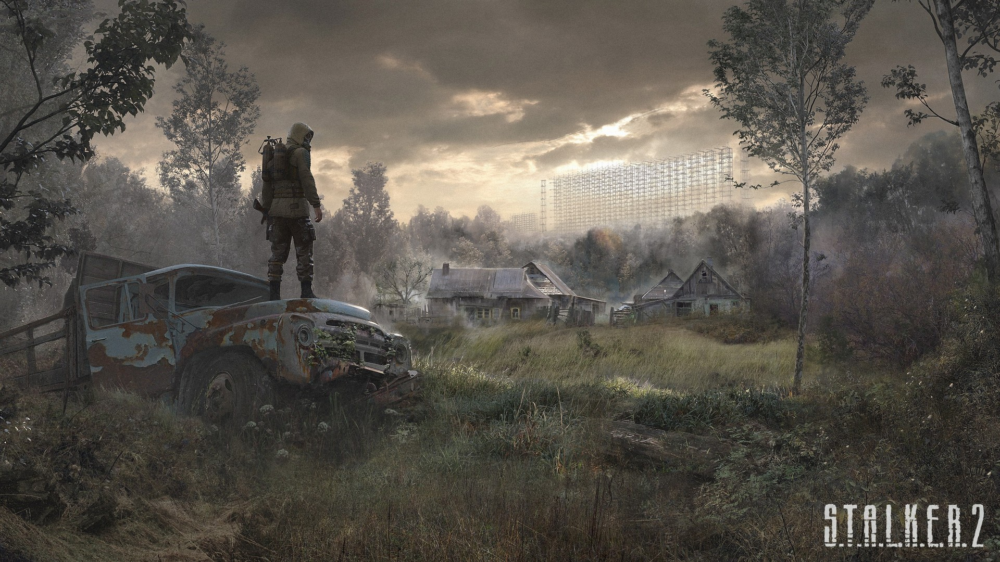
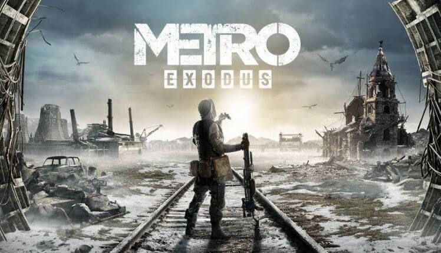
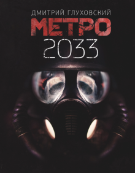
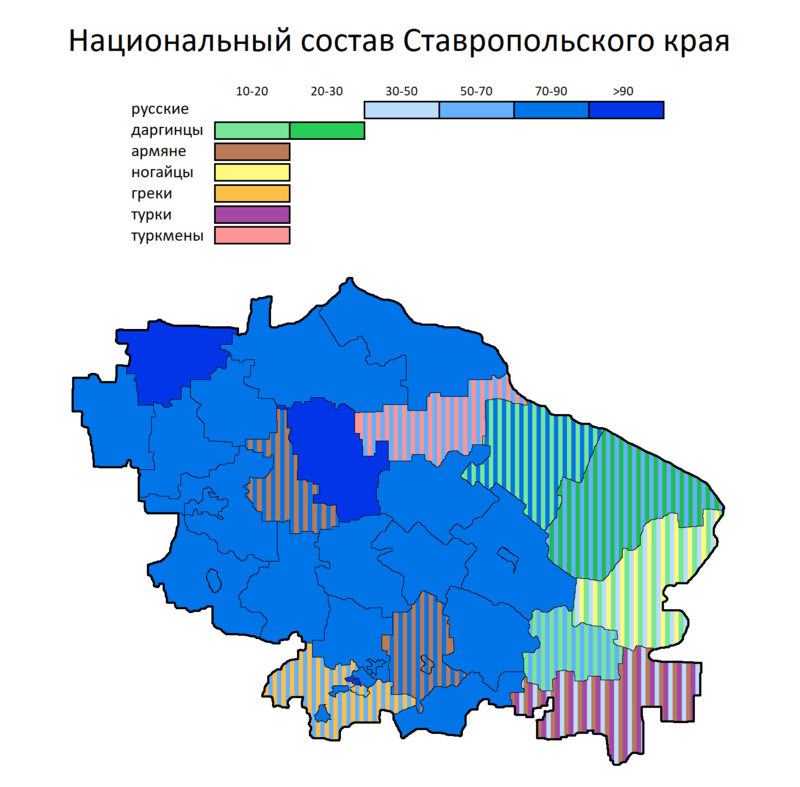

Cписок моих любимых:
Игры
Fortnite

Серия игр S.T.A.L.K.E.R
Серия игр Metro
menu
Книги
Книга: "Метро 2033" - Дмитрий Глуховский.
Стругацкий: Пикник на обочине
menu
Песни
Imagine Dragons x J.I.D - Enemy (from the series Arcane League of Legends)
жмякMORGENSHTERN - ARISTOCRAT (Official Video, 2021)
жмякНа это лучше не нажимать
жмякmenu
Население Ставропольского края
| Народ | Численность в 2002 году, человек | Численность в 2010 году, человек |
| Русские | 2 231 759 | 2 232 153 |
| Армяне | 149 249 | 161 324 |
| Даргинцы | 40 218 | 49 302 |
| Греки | 34 078 | 33 573 |
| Цыгане | 19 094 | 30 879 |
| Украинцы | 45 892 | 30 373 |
| Ногайцы | 20 680 | 22 006 |
menu